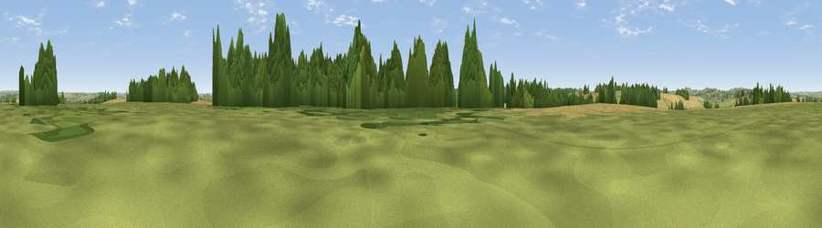

Stowe Heights
#32806 in England · top 53% of its area beats it · near Church StoweThe view, rendered

A 360° render of this exact spot computed from the terrain model, tree cover and land cover — summer colours, afternoon light, calibrated against photographs of famous viewpoints. Real trees, hedges and buildings will differ in detail.
The panorama
Grey silhouette: terrain skyline in each direction (720 bearings, Earth curvature and refraction included). Dashed green: skyline with trees (+15 m) and buildings (+8 m) as obstacles. Blue strip: how far the ground is visible on each bearing.
Where the view opens
Wedge length = distance to the farthest visible ground on that bearing (vegetation-aware). Rings at 10, 25 and 50 km.
What fills the view
44% cropland · 35% grassland · 19% woodland · 2% built-up
Angular shares of the visible panorama (visual magnitude), not map area. Landscape diversity 0.49 (0–1 Shannon).
Key numbers
More beautiful places nearby
The staircase of upgrades: each row has a higher view potential than everything closer. Driving times are estimates from straight-line distance, calibrated against real road routing — check an actual route before setting out.
| Place | Direction | Drive | Score |
|---|---|---|---|
| Weedon Hill | NNW · 2 km | ~5 min | 44.0 |
| Viewpoint near Everdon | WNW · 5 km | ~11 min | 46.6 |
| Preston Capes Hill | WSW · 6 km | ~13 min | 47.4 |
| Viewpoint near Newnham | NW · 7 km | ~14 min | 55.6 |
| Viewpoint near Norton | NNW · 8 km | ~16 min | 56.8 |
| Viewpoint near Staverton | WNW · 9 km | ~17 min | 63.3 |
| Big Hill - Staverton Clump | WNW · 9 km | ~18 min | 68.4 |
| Viewpoint near Northend | WSW · 23 km | ~38 min | 70.3 |
52.20324, -1.08203 · source: osm peak · position refined by local search. Computed location — check access rights before visiting.